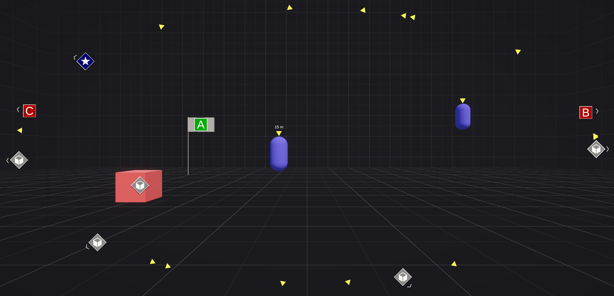

Target Indicators
Target Indicators is a Unity package that enables you to create visual indicators to track world-space targets. Guide users to points of interest, waypoints, or other in-game places. Customize indicators to fit your project's style and requirements.
The package integrates with any UI system, offering an API to calculate and bound screen-space positions for any target. It includes ready-to-use Sample Assets for a quick, low-code setup, also serving as an excellent references for building fully custom visual indicators.
Note
Get Target Indicators on the Unity Asset Store.

Key features
Target indicators focuses on simplicity and high performance. The following highlights are what you can expect from this package:
- Zero Garbage Collection: No heap allocations after initialization. Passes memory-safe buffers via ReadOnlySpan
to completely avoid garbage collection overhead in hot paths. - Highly Configurable: Includes multiple boundary types (Padded, Absolute, Unbounded, Compass Tape), configurable clamping shapes (Rectangle, Ellipse), and target distances.
- Smart "Look-At" Thresholds: Dynamically trigger UI elements, like fading distance labels when the player looks directly at a target.
- In-Editor Boundary Visualizers: See exactly where your UI boundaries will clamp directly in the Scene view for fast, visual iteration.
- Multi-Layered Boundaries: Run multiple boundary systems simultaneously. Clamp enemy indicators to an elliptical boundary, quest markers to a padded rectangle, and waypoints to a compass tape with completely independent settings.
- Instant Iteration: Fully supports Unity's Fast Enter Play Mode (No Domain Reload on Enter Play).
- Blazing Fast: Does not use Object.Find or GetComponent at runtime.
- Render Pipeline Agnostic: Works perfectly with URP, HDRP, and Built-in.
- UI Agnostic: Completely decoupled from the rendering method. Use standard Unity UI, UI Toolkit, or any third-party UI solution.
- XR Ready: Full support for VR/AR Head Mounted Displays.
Note
*The package has a dependency on com.unity.ugui to support the sample scenes but you are not required to use uGUI to work with target indicators.
Technical details
- Performance: Strict zero-allocation update loops. Passes memory-safe buffers via
ReadOnlySpan<T>to eliminate GC pressure. - Optimization: Zero reliance on
Object.Find,FindObjectsOfType, orGetComponentat runtime. - Architecture: Event-driven design with completely decoupled math and rendering logic. Uses lightweight structs for all data payloads.
- UI Compatibility: Agnostic architecture; works natively with standard uGUI, UI Toolkit, or custom third-party UI solutions.
- Render Pipelines: Fully compatible with Built-in, URP, and HDRP.
- Platform Support: Supports traditional displays and XR Head Mounted Displays (XR).
- Workflow: Fully supports Unity's Fast Enter Play Mode (Domain Reloading disabled) for rapid iteration.
- Configuration: All settings including boundary shapes, padding sizes, "Look-At" thresholds and more are fully configurable at both edit and runtime.
- Starter: Includes clean, minimal sample scenes and drag-and-drop prefabs to demonstrate implementation without project bloat.
Dependencies
The following dependencies are required for target indicators.
Unity version
- Unity
6000.0or newer
Packages
com.unity.inputsystem 1.14.0for samplescom.unity.ugui 2.0.0for samples